RoboColosseum brand kit
The RC monogram under the colosseum arcade, vectorised from the @RoboColosseum avatar. Every file is an SVG; the ones without a fixed colour use currentColor, so they take the text colour of wherever you put them.




Notes
Source: the 400 px avatar on x.com/RoboColosseum (source-x-avatar-400.jpg), traced at 4× with VTracer and minified with SVGO. The wordmark is Archivo 800 at width 112, converted to outlines, so no font is needed. Minimum size for the full mark is about 40 px; below that use rc-letters.svg or the favicon.